In Chapter 1, I briefly discussed how some controls are blunt in that they aim to unilaterally block all requests that come their way without attempting to identify the requestor or the context under which the request is made. An example of a blunt security control is a network control. This chapter is devoted to discussing the various network controls that you can add on AWS.
A network control is any security control that may be added at the network layer of the infrastructure, as identified by the Open Systems Interconnection (OSI) networking model. For the purposes of this chapter, I will assume that you have a basic understanding of computer networks. You can learn more about computer networks by reading Computer Networks by Andrew Tanenbaum and David Wetherall (Pearson).
The network layer security infrastructure does not read or understand application layer semantics. Rather than seeing applications (that run business logic) interacting with one another, the security infrastructure sees network interfaces that interact with one another, making it difficult to apply controls that can incorporate business logic. In general, network security is like an axe: solid, powerful, but occasionally blunt and inaccurate. In no way am I discrediting the importance of network security but merely pointing out that it requires refinement to accommodate any nuance in applying security rules.
If you list every service in your application, you can roughly divide these services into two sets. The first are called edge services, which allow end users to fetch or change the state of their aggregates. These services are internet facing and hence are exposed to threats from around the world that most internal services may never have to face. The edge services are said to be residing in the public zone of your cloud infrastructure. For the purposes of this chapter, I will not be focusing on the services within the public zone. Rest assured, I will go into detail about these public-facing services in Chapter 6.
The second set of services are the ones that communicate only with other services or resources within your organization. I will label these as backend services. They operate in nonpublic environments, giving them an extra shield of protection against external (public) threats. This chapter focuses mainly on services that live within this private zone.
Figure 5-1 shows how services can be classified into edge and backend services.
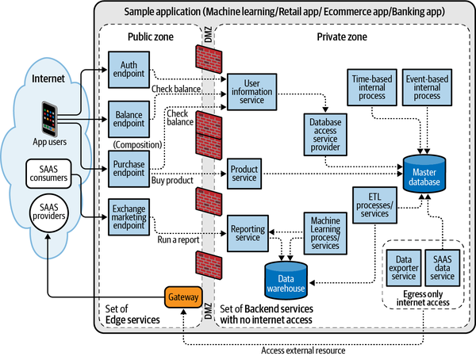
Almost every application that runs in the cloud will have some edge services and some backend services, whether the application is a mobile app, an ecommerce website, or a data-processing application. If any of your services need access to external Software as a Service (SaaS) providers, you may be able to classify backend services further into a specialized bucket where they can have outgoing internet access in a controlled way, but still cannot be accessed directly from the internet.
In my experience, it is best to keep business logic at the edge (public zone) to a minimum and refactor it as much as possible into the secure private zone. This technique protects the application’s core functionality from unknown threats prevalent on the internet, making it much more difficult for outside parties to gain unauthorized access.
Chapter 1 introduced you to the concept of isolation and blast radius using the analogy of locked doors. In essence, you want your services to be isolated into logical partitions so that any breach of any of these partitions doesn’t affect the security of other services. I also made a case for segmenting (partitioning) microservice domains based on business logic. At the network layer, this strategy of segmentation based on business logic is called microsegmentation.
A microsegmentation strategy where the resulting partitions are too small will result in services making too many calls that span across network segments. This leads to overhead that is costly and complex. A microsegmentation strategy where the resulting partitions are too wide may not enforce the security rules you had hoped to enforce at the network layer. This makes this whole exercise moot. By the end of this chapter, you will know how to make an informed choice on where to draw the line between services and be able to implement the right strategy that fits the security needs of your organization.
A good domain-driven design (DDD) is a prerequisite for a network-level microsegmentation to be cost effective. If microsegmentation is done against a bad domain design where there is a lot of cross-context dependence (coupling), cross-context calls may overwhelm the system, resulting in higher costs and complexity.
Throughout this chapter, segmentation and isolation of services are the guiding theme. Once this segmentation has been achieved, I discuss ways in which legitimate and authorized communication between these isolated partitions can be effectively enabled.
A control or countermeasure is any action that results in reducing the aggregate risk of an application. I want to echo a nuanced but controversial claim that I first came across in the book Enterprise Security Architecture by John Sherwood et al. (CRC Press). Network controls do not provide direct application or data security. I say controversial because there is so much network layer security software claiming to offer just that (data protection). Network layer controls are unable to read application data, and they cannot understand what is being communicated semantically. Thus, any controls applied to the network need to be blunt. Your ability to use the controls with precision is severely limited. As a result, network restrictions are generally too broad and sometimes obstruct value-adding activities. You may be able to identify and control communication patterns and the channels that facilitate this communication, but you have no visibility into the content of these communication channels. I will now qualify my claim. Although a well-designed network infrastructure does not directly reduce application risk, it can indirectly have a large impact. It allows for a simpler and more secure architecture, thereby indirectly reducing the impact of security incidents through isolation and monitoring.
In the monolithic model, the prevailing approach to security has been to create a security zone by grouping services together in a zone of trust. In such a design, services within a zone trust one another, possibly without authentication in between. This means that the public-facing services may have their own security zone while databases may also have their own security zone. However, in many cases these divisions are not based on business domains but rather technical ones.
In this model, a trusted zone can have a boundary that demarcates what is expendable from the rest of the application. By securing this perimeter, you can protect the parts of your application that host sensitive data, such as the database and application services, from external threats. This protective barrier is sometimes referred to as the demilitarized zone (DMZ). Because of the presence of a strong DMZ, the presence of trust within zones can be somewhat justified. This security pattern works well in monolith systems where network communication between services is minimal. On the other hand, if one system gets compromised, the entire network may become compromised and perimeters will become ineffective. Some of the systems can fall victim to attacks by trusted insiders, where employees or contractors can make use of the trust-based advantage they have by being inside the DMZ. To be clear, I am not saying you should take down any perimeter protection. After all, many regulators explicitly require the presence of such a perimeter. I suggest adding extra (in some cases, redundant) protections within the perimeter to protect from a trusted but compromised insider.
With microservices, the work to access database layers and other business logic may be divided up among various isolated services that talk to one another through some form of network-based transport. This isolation allows microservice applications to develop security controls that are more specific to their systems. Now, every communication between every service requires independent access control regardless of whether they are in the same zone or different ones. This setup is called a zero trust network. The security aspect of a zero trust network sounds great but comes with an additional overhead. Microservices are supposed to follow the single-responsibility principle (SRP), where they are not supposed to perform any task apart from the one business case that they are designed to be used for. It becomes difficult to justify the presence of extensive network authorization logic inside each and every service provider. This is where we get to an impasse. An ideal microservices architecture should have the benefits of a zero trust network, but without the added complexity.
A good DDD posits that communication between services within the same domain is much more common and likely than communication across domains. Domains even in a good domain-driven system may still require cross-domain communication. This communication, however, will be structured to follow a well-defined contract. Security controls are far more important and easier to implement when using clearly defined API contracts. Thus, it makes more sense to divide the network infrastructure based on domain contexts rather than the technology layer systems in a DDD setup.
DDD applications suggest using a strategy of microsegmentation, where domains or bounded contexts are divided based on their business use case and then secured individually against attacks. In microsegmentation, the traditional network is divided further by compartmentalizing and isolating disparate segments, which have no business justification to talk to one another. A large part of this chapter is devoted toward implementing a successful microsegmentation strategy.
Microsegmentation is not a silver bullet that can solve all security-related concerns at the network layer. It works best by augmenting application-level security, not by replacing it. It also comes with added complexity and costs, which need to be carefully evaluated against the perceived security benefit from such a security measure.
In order to achieve microsegmentation, it is important to understand how various networking constructs are structured within AWS. You may be aware that AWS is expanding its infrastructure globally. By dividing the world into different regions, AWS adheres to regulatory restrictions. AWS offers high availability by dividing the cloud landscape into availability zones (AZs) within each region. More information can be found in an AWS article on global regions. You will ultimately run most of your services in a particular region in a particular availability zone (or zones). However, beyond these divisions, the network infrastructure itself cannot be physically separated. This is especially a problem since you may be sharing an AZ with other AWS customers, possibly your competitors. So instead of physical separation, you are provided with tools for dividing the network infrastructure logically. These tools can be collectively called software defined networking (SDN) tools. These tools provide outcomes similar to the services provided by their physical counterparts in on-premises networks.
Just like any physical network, cloud networks have their own routers for routing requests. AWS provides each network partition with an abstraction in the form of a route table to control how traffic flows between the various network partitions on AWS. At a regional level, AWS provides a virtual private cloud (VPC)—Amazon’s network virtualization—that isolates your cloud environment into smaller cloud-based partitions. At an AZ level, subnets help in grouping and segmenting services using IP address ranges using the Classless Inter-Domain Routing (CIDR) notations. VPCs isolate your networks; hence, I call them hard partitions. Subnets group services together; these I call soft partitions.
The tools shown in Figure 5-2 can be used to isolate each service into its own logical partition to restrict the sphere of influence of each service.
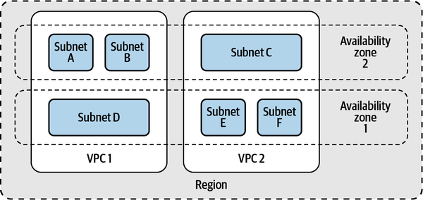
I will assume that services within bounded contexts benefit from a level of familiarity with one another. Therefore, communication within bounded contexts has an inherently lower risk and is easier to secure using controls I have discussed. Familiarity, however, cannot be expected across bounded contexts. Therefore, additional controls are required to reduce the risk involved in cross-context communication. Figure 5-3 outlines a microsegmentation strategy that leverages this behavior that is observed around bounded contexts.
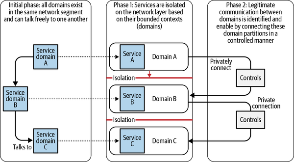
As seen in Figure 5-3, you can have a microsegmented network layer that mirrors your domain logic by following the steps outlined in these two phases:
Subnets on AWS are not much different from subnets on any traditional networking stack. The IP address space within a cloud can be segmented into smaller building blocks using subnets. Subnets are what I refer to as soft partitions. Since they cannot span across AZs, subnets cannot provide the level of isolation that VPCs do. However, they provide a great way of grouping services together so that you can apply security controls.
On AWS, a subnet is an AZ-level partition. In other words, each subnet must live inside a single AZ. Subnets are declared with the CIDR notation that specifies all the IPs within a particular range that can reside in a particular subnet. Most cloud services will run inside a subnet and will carry an internal IP address that is part of the IP space assigned to this subnet. So a subnet with the CIDR 192.168.0.0/24 includes all IPs from 192.168.0.1 to 192.168.0.254 (the first and last IP address of each block is reserved).
There are tools available on the internet to help you calculate and create IPv4 subnet CIDR blocks. You can find tools that suit your needs by searching for terms such as “subnet calculator” or “CIDR calculator.”
Figure 5-4 shows the process of creating a subnet inside a VPC.
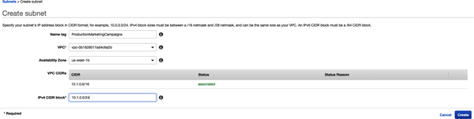
An AZ in one account may not map to the same location as an AZ with the same name in a different account. This leads to a lot of confusion, especially while designing endpoint services. Hence, AZs should never be referenced using their names across different accounts.
An AZ may contain one or more subnets. To ensure that services end up in a specific AZ, you should deploy these services to a subnet within that particular AZ. You should consider deploying most of your services to at least two AZs (and in extension, at least two subnets) if you want to maintain high availability. Figure 5-5 shows a typical deployment you may see for most organizations.
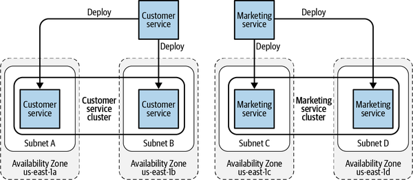
Routing inside the AWS network is governed by a lookup table called the route table, which inspects the network traffic and provides routing details for the next hop for each network packet. Each subnet must be associated with a route table, which controls the routing for the subnet. Route tables are used to orchestrate the controlled cross-partition communication I talked about in “Software-Defined Network Partitions”. I will be revisiting route tables when I talk about VPCs, the other way of segmenting network partitions.
The entries in a route table are CIDR blocks that encompass a collection of one or more IPs. Apart from individual CIDR blocks, you can also include a named list of CIDRs known as a prefix list. A prefix list is either a customer-defined block of IP addresses (also defined using the CIDR notation), in which case it is called a customer-managed prefix list, or a managed AWS service, in which case it is called an AWS-managed prefix list.
Using route tables, subnets allow you to specify rules on which network partitions can talk to one another and which cannot. Since you get complete control over these rules, subnets can become great tools for setting up the network environment in which your services can run. You can also apply the principle of least privilege (PoLP) at the subnet level by deciding which services can connect to the public internet and isolating services that don’t need direct internet access.
Not having internet connectivity will also ensure that sensitive data or information has no direct way of leaving your network without compromising multiple parts of the system.
In the networking world, a gateway is a node on a network that acts as a forwarding host to another network. On AWS, with respect to subnets, there are three gateways that every cloud network architect should be aware of:
If your network uses IPv4, an internet gateway also provides network address translation (NAT) services for your address space.
A public subnet is a subnet in which the instances that are present can be routed from the public internet. What makes a subnet public is the presence of a route to an internet gateway. An internet gateway is a gateway device that gives your subnet a route to or from the public internet. Naturally, this should raise alarms in the minds of security enthusiasts since any remote possibility of having access from the public internet brings with it the possibility of unauthorized access if the administrators are not careful.
When any service is launched on AWS, it receives an IP address. In a public subnet, depending on the settings, your host may get a public IP address from the pool of addresses controlled by AWS. This address is assigned to the instance’s elastic network interface (ENI). This address is in addition to a private address that is assigned to the instance.
Just because your service exists in a public subnet does not make it automatically routable from the internet. For that to happen, you need to have a route from the internet gateway to your service’s host.
A private subnet is the opposite of a public one. There is no direct route from an internet gateway to this subnet. As a result, for external entities, it is not possible to directly access any resources that are deployed to this subnet without first entering through a public subnet of your network.
Running a service in an isolated network that is logically isolated from the rest of the world ensures that a compromised application can still be contained at a network layer in addition to the controls you may have at the application layer.
If you follow the PoLP, you will want to put all of your code and services in a private subnet except the ones that absolutely need to be routable from the public internet. Making more services private and deploying them in a private subnet may be the single most helpful thing you can do to make your network more secure when dealing with sensitive data.
When you deploy a microservice on AWS, you will almost always be asked to select a subnet in which this service will run. I call this the subnetworking problem. This is true for AWS Lambdas as well as Kubernetes pods. From a security perspective, to decide on which subnet these services will run, you can ask yourself two questions:
Does this service need to be accessible via the public internet? This will determine whether the service should be deployed to a public subnet or a private subnet.
Which AZ do you want this service to be deployed in? If you want high availability, you may decide to redundantly deploy multiple services in different AZs. Overall, you want to choose a subnet that belongs to an AZ where you will get maximum availability.
Figure 5-6 shows an example where I try to answer this question. Let us assume I have a service (Service A) that I want to deploy. Service A is a backend service and should only live in the private zone. Service A already has an instance running in AZ 1B, so I want to specifically deploy it to AZ 1A.
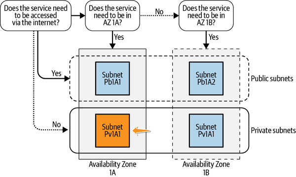
I decide to go with Subnet Pv1A1 because it satisfies both conditions:
It is a private subnet.
It belongs to AZ 1A.
While accessibility from the internet is one side of the story, whether or not a device on a private subnet can access the internet by initiating connections from within the private subnet depends on whether there is a gateway associated with this subnet. I cover that use case in the next section when I introduce NAT gateways.
The internet gateway is what makes our services accessible over the internet. In the case of a private subnet, the desire is to not make it routable over the internet. However, many services from within a private subnet may still find the need to access external resources. That may be because they want to call an external rest endpoint or possibly download files from some internet location. The instances in the public subnet can send outbound traffic directly to the internet, whereas the instances in the private subnet cannot. Instead, the instances in the private subnet can access the internet by using a NAT gateway that resides in the public subnet.
An egress-only internet gateway can be used for almost identical purposes to that of a NAT gateway in subnets that use IPv6 addresses.
A NAT gateway itself lives in a public subnet and routes outgoing requests from a private subnet through the internet gateway to the public internet. Requests that go through the NAT gateway have to be initiated from within the private subnet. Having said that, by default the NAT gateway maintains a stateful connection and therefore, an outgoing request automatically allows an incoming response even if the requestor is inside a private subnet. Thus, it allows for safe outgoing communication even from within the private subnet. Although it does pose the risk that a bad actor from within the private subnet could compromise and send out sensitive data, the compromise ensures that you have a middle ground when it comes to the trade-off between complete isolation and full internet connectivity. Figure 5-7 highlights this flow.
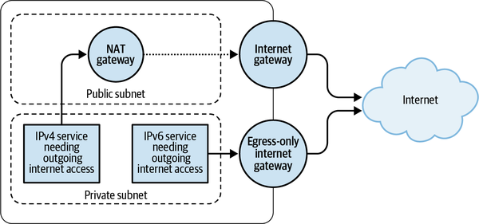
It is best to follow least privilege and only allow services that absolutely must connect to the internet to be inside such a private subnet, where an outgoing connection to the public internet exists.
Unlike public subnets, private subnets do not need to have a public IP. So by default they are only assigned the private IP that conforms to the CIDR address that the subnet was created with. The NAT gateway can, however, have an elastic IP address if needed. This will ensure that all outgoing microservices from your VPC have the same IP address, which can be used for whitelisting when it comes to certain regulations (such as PCI-DSS).
A NAT gateway is a fully managed service, and hence architects do not have to worry about high availability or bandwidth-related issues. These are handled by AWS under the SRM.
Although subnets provide a great way to group together various services, a VPC is another AWS resource that provides complete logical isolation of networks. A VPC can be thought of as a tiny portion of the cloud that has been isolated for your benefit from the rest of the internet. With its own private internet backbone and strong encryption, AWS provides a logically separate environment that gives the same security benefits as your own on-premises data center.
Amazon VPC enables you to launch AWS resources into a virtual network that you’ve defined. This type of virtual network closely mimics a traditional network that would be operated on your own data center, but with the benefit of utilizing the scalable infrastructure of AWS. This VPC can have its own sets of internal and external IPs. True isolation of bounded contexts as a result can be delegated to the AWS infrastructure by properly isolating each service inside its own VPC.
Amazon VPC supports the processing, storage, and transmission of credit card data by a merchant or service provider and has been validated as being compliant with PCI Data Security Standard (DSS).
I have already introduced you to route tables and the concept of routing in “Routing in a Subnet”. In this section, I will expand further and talk about how routing works with VPCs. To begin with, routing within a VPC is entirely private. Whenever a service communicates with another service within the same VPC, AWS ensures that the network traffic generated from these communications does not reach the public internet and that it stays within the AWS private network.
When you create a VPC, it automatically has a main route table. The main route table controls the routing for all subnets that are not explicitly associated with any other route table. Each incoming and outgoing data consults the route table for instructions on where to send it next. Routes can be directed to resources from the same subnet, resources from another subnet, or even resources outside the current VPC. Most of your cloud services will live inside a VPC. Hence, it is important for your VPC route table to control network communication. For communication with services outside the VPC, you may have gateways that live on the VPC. The purpose of a gateway is to accept traffic from within the VPC and then forward it to the right destination address.
One option for segmentation involves isolating systems based on their environment. Production deployments get their own VPC, as do staging deployments, QA deployments, and any others you may choose to have. This parallels the historic isolation of servers of different environments from one another.
With microsegmentation, only domains and bounded contexts are segmented into network partitions. Multiple services can be located within the same domain and hence within the same network partition.
The overhead of managing too many granular environments is weighted against segmenting further since on-premises systems separated out these environments physically. Figure 5-8 illustrates such a setup where the application runs on a DDD but services are partitioned solely based on their running environment.
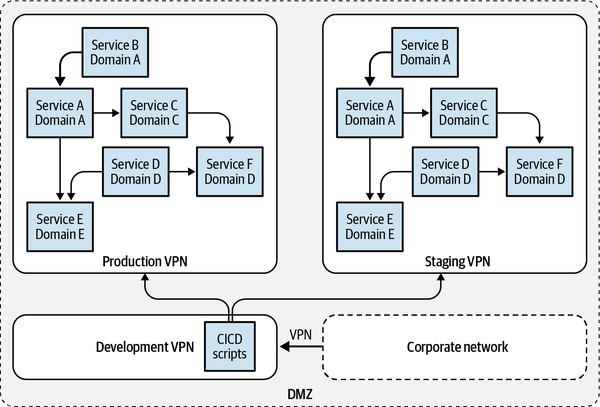
Although segmentation is achieved, this is not microsegmentation. This partitioning of networks ignores the business domains that the services belong to. Although the simplicity of putting all services in one network partition can definitely entice some AWS customers, especially ones whose requirements for privacy and security are not too high, for many others it may be possible to isolate systems further based on their bounded contexts.
Given that the overhead of physical partitions is taken away from cloud-based systems, segmentation can be achieved at a much smaller cost. Domain-based segmentation has many benefits from a security perspective since you can put many preventive controls at the network layer that would have been very hard to put in place if the traffic would have been within the same network partition. Figure 5-9 shows an example of a network that is microsegmented based on the business domains that microservices belong to.
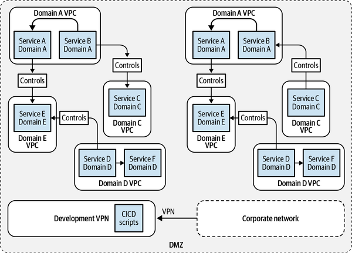
Segmentation using VPC is great for introducing additional levels of isolation and thus adding security controls to the system, but it isn’t free. Depending on your segmentation design and communication patterns, there may be costs associated with cross-VPC traffic. Bad domain designs may exacerbate costs due to increased cross-VPC traffic when cross-domain coupling is high.
Even with proper isolation of services within a VPC, there may always be a need for services to communicate with other services from different contexts. AWS provides the necessary tooling to set up, manage, and utilize VPC-based microsegments at scale. There are three main strategies to this:
The simplest way of enabling communication across VPCs is by connecting them directly to one another. On AWS, VPC peering can achieve this connection. Peering between VPCs enables you to route traffic between the two VPCs privately. Once created, instances in either VPC can communicate with one another as if they are within the same network. Communication between VPCs is controlled by the route tables of the individual VPCs that are peered.
VPC peering can only be performed between two VPCs that have no overlapping IPs or CIDR blocks. You can create a VPC peering connection between your own VPCs, with a VPC in another AWS account, or with a VPC in a different AWS Region (as long as they do not have overlapping IP addresses).
You first define the two VPCs that you want to connect. Since peered VPCs cannot have overlapping IPs, you have to be extra careful in making sure that the IP space is well defined. Once you have the VPCs set up, you can begin the peering process. Peering can be initiated by either VPC, and the other must accept the peering connection.
Figure 5-10 shows the process of creating a peering connection.
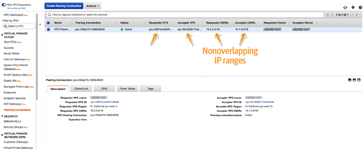
VPC peering is not transitive. So if VPC A is peered with VPC B and VPC B is peered with VPC C, services in VPC A cannot automatically communicate with services in VPC C unless VPC A pairs with VPC C independently.
Once you have established the peering connection, you can assume that a link has been established between the two VPCs, which in your case hold different services from different domains. Any data packet sent to the peering connection is automatically forwarded to the peered VPC. This means, for services from one VPC to communicate with services from the other, you simply have to route their data packets to the peering connections. This can be achieved by configuring the route table in the VPC to be aware of IPs that belong to the target VPC.
For example, let’s say you have two microservices, Service A and Service B. They both belong to two different bounded contexts—Context A and Context B. As a result, you have microsegemented them into two different VPCs—VPC A and VPC B. It is assumed that you have already configured the route tables in both these VPCs to route traffic properly to local instances within the VPCs. So traffic within VPC B with a destination of Service B will be routed properly to Service B.
Assume that you want to enable cross-VPC communication between Service A and Service B. To do so, first you should create a peering connection between VPC A and VPC B. Within VPC A, you should configure the Route Table A in such a way that, anytime it encounters traffic with a destination IP address belonging to VPC B, it should route this traffic to the peering connection.
As mentioned, the peering connection will then forward this traffic to VPC B. And once the traffic reaches VPC B, as mentioned earlier, it will be routed properly to the right destination—Service B. Figure 5-11 highlights this flow.
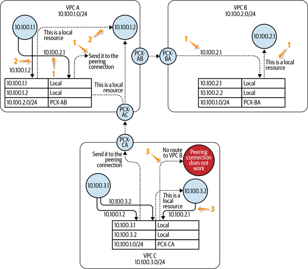
In conclusion, VPC peering allows you to achieve the “connect” phase of the microsegmentation process as defined in “Software-Defined Network Partitions”. When you know that you can easily enable cross-VPC communications across services with legitimate use cases, you can be more aggressive during the isolation phase of microsegmentation. In most microsegmented organizations I have seen, there may be multiple peering connections between different VPCs. Figure 5-12 shows just one of the many ways you can partition your organization based on the environment that a service runs in. Since the VPCs are partitioned based on the business use case, the partitioning achieves the reference architecture I was hoping to go toward in Figure 5-7.
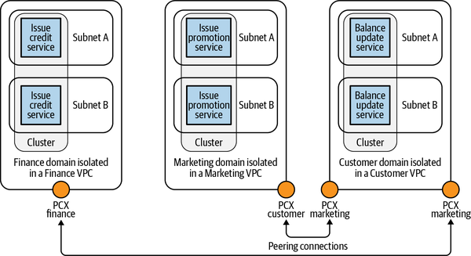
The use of VPC peering as the strategy for the connect phase of the microsegmentation process faces two important hurdles:
Since you cannot have overlapping IPs in VPCs that you wish to connect, you have to be strategic while designing the IP space of your VPCs. When trying to pair your very wide VPC with other VPCs that have overlapping IP ranges, you will likely encounter problems.
Due to the absence of transitive peering, you may end up creating a lot of peering connections. If you have 5 VPCs, and each of them needs to be paired with every other VPC, you will end up having 10 peering connections. If you have 100 VPCs, you will end up having 4,950 peering connections. As you can imagine, this will lead to complexity in route table designs.
There is no additional cost for setting up VPC peering connections. Hence, there is no fixed hourly cost vector that is associated with this setup. There is, however, a cost associated with the data that is transferred between peered connections. If you have a lot of cross-domain communication that makes use of peered connections, the cost may be something you need to carefully predict and evaluate when weighing against the security benefit you gain from segregating the networks. If the peering connections are in different regions, the interregion data transfer will also result in an added cost.
On the complexity side, as mentioned, the number of peering connections may get unmanageable if you have a lot of services that talk to one another.
As mentioned, having too many interconnected services that span across multiple bounded contexts can result in an exponential rise in complexity due to peering connections unable to transitively route traffic. In such situations, AWS recommends the use of a different service, AWS Transit Gateway, for the “connect” phase of the microsegmentation process.
AWS Transit Gateway is a fully managed, highly available gateway service provided by AWS that can attach itself to multiple VPCs. The AWS Transit Gateway maintains its own route table. Thus, whenever traffic reaches the Transit Gateway with a destination IP address belonging to a VPC that is attached to this Transit Gateway, the route table is able to route this traffic to the correct VPC attachment.
As an example, if two services, Service A and Service B, in two different VPCs (VPC A and VPC B) need to communicate with one another, they can do so by attaching themselves to the same Transit Gateway. Whenever Service A sends packets to Service B, the route table inside VPC A will route this traffic to the Transit Gateway. The Transit Gateway will receive this traffic, and upon looking up the route table entry in its own route table, it will then route this traffic to VPC B. Multiple services across multiple VPCs can thus communicate with one another by using one Transit Gateway and a well-configured route table. Since one centralized service is now responsible for routing cross-VPC traffic, it becomes easier to add new security-related rules at the Transit Gateway.
As mentioned, Transit Gateway is a fully managed service. As a result, AWS does not expect you to opt for multiple deployments or any kind of a redundancy mechanism to make the Transit Gateway connection fully available. Transit Gateway is also not a free service and will incur an hourly charge. Deploying multiple Transit Gateways does not make the system faster or more available.
Figure 5-13 demonstrates how traffic is routed in an AWS Transit Gateway by consulting the route table.
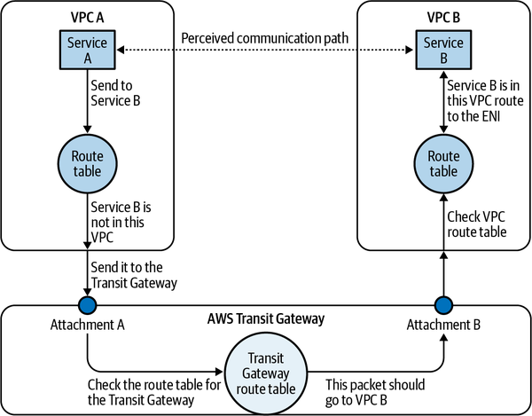
Unlike VPC peering, where the connection between peered VPCs is direct, the use of AWS Transit Gateway involves an extra hop, which may be an added delay for some time-sensitive applications.
AWS Transit Gateway doesn’t support routing between Amazon VPCs with overlapping CIDRs. If you attach a new Amazon VPC that has a CIDR that overlaps with an already attached Amazon VPC, AWS Transit Gateway will not propagate the new Amazon VPC route into the AWS Transit Gateway route table.
In conclusion, similar to VPC peering, AWS Transit Gateway allows you to achieve the “connect” phase of the microsegmentation process. In contrast to VPC peering, where connections are made point-to-point between each VPC, AWS Transit Gateway uses a hub-and-spoke model for connecting different VPCs. In this model, AWS Transit Gateway is the hub, while individual VPC attachments are its spokes.
Using AWS Transit Gateway, you can connect your VPC-based microsegmented domains in a controlled manner. Figure 5-14 shows how the AWS Transit Gateway acts as a centralized routing hub for all your services.
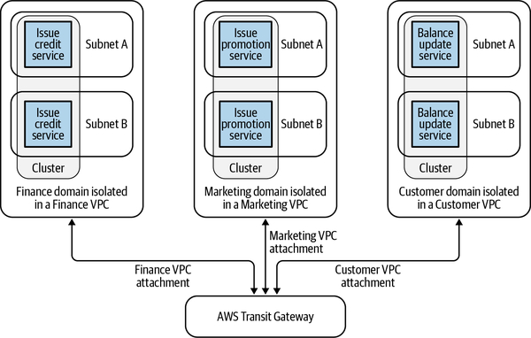
It is easy to see how the AWS Transit Gateway scales as the number of domains (and, as a result, VPCs) increase within your organization. If you have five domains that are microsegmented into five VPCs, you will need a single AWS Transit Gateway to enable controlled cross-domain communication. Each of these domain-based VPCs can be attached to the same AWS Transit Gateway, and the routes can be configured to enable the right communication patterns while blocking unauthorized communication. If you need to add one more VPC to the mix, you can still use the same Transit Gateway and attach it to the new VPC. Thus, a single Transit Gateway can continue to handle all your connectivity needs, making it much more scalable.
As long as your microservices are isolated within their domain-specific VPC, you get domain-level isolation in such a network topology without sacrificing connectivity for legitimate communication patterns. All of the rules regarding who can talk to one another and under what circumstances can now live on top of the AWS Transit Gateway.
Unlike VPC peering, AWS Transit Gateway is not free to set up. The gateway has a fixed hourly price, regardless of whether it’s attached to a VPC or whether it’s receiving traffic. In addition to this fixed fee, there is a fee that has to be paid per network attachment. So, if you have a complex network setup with a lot of VPCs talking to one another, each of these attachments will bear an added cost that needs to be evaluated while considering the trade-off. Finally, there is a third dimension to the cost vector, which is proportional to the amount of data that is transferred through the AWS Transit Gateway. Given the two fixed costs associated with the AWS Transit Gateway, the cost equation and economies of scale may follow different paths from that of VPC peering.
From a complexity perspective, AWS Transit Gateway does offer a much simpler setup. By centralizing the rules regarding VPC interconnections at the Transit Gateway instead of dispersing them between the route tables of the VPCs, the complexity benefits of using a Transit Gateway over VPC peering become apparent.
Although Transit Gateways provide a great way of connecting distinct VPCs into a hub-and-spoke pattern, VPC Endpoints provide an alternative way of allowing cross-VPC communication. VPC endpoints are used in places where you have a clear service provider–service consumer pattern, enabling a service consumer to consume a service that is hosted in another VPC.
A VPC endpoint can act as a secure method of transporting data to and from certain services that exist outside of your VPC. The VPC endpoint can be added to your VPC in two ways:
For supported services such as AWS DynamoDB or AWS Simple Storage Service (S3), the endpoint can be added as a gateway. These gateways can be added to your route tables using AWS-managed prefix lists.
The endpoint can be added as an ENI that lives inside your VPC just like any other service. These interfaces can be added to your route tables using their assigned IP addresses or at times using their DNS hostnames.
As soon as the service provider is added to your VPC (as a VPC endpoint), you can treat the provider as if it were part of your network. You can add security groups around this service and include the provider in route tables as you would any other local service within the VPC. This provides you with a nice level of abstraction. The VPC endpoint creates a channel from your VPC all the way to the service provider’s VPC. As part of the AWS Shared Responsibility Model (SRM), AWS guarantees secure and encrypted delivery of data from the VPC endpoint all the way to your service provider, which may be in a different VPC (possibly in a different AWS account) without ever exposing these packets to the public internet, thus securing the communication channel for you.
An endpoint (interface or gateway) cannot initiate connection with any service within your VPC, making it possible to be added to any private network without significantly affecting its security posture.
Gateway VPC endpoints are used to create endpoints for AWS-managed services. As of this writing, two AWS services support gateway endpoints: DynamoDB and AWS S3. These services exist outside VPCs, and accessing them may require the calling services to break out of their own VPC.
Although both AWS S3 as well as AWS DynamoDB allow access using TLS-encrypted endpoints, the fact that this connection has to happen over the public internet is something that makes some organizations a bit uneasy and, therefore, VPC endpoints are preferable.
If any service within the application requires access to these external services, it then loses the ability to run in a closed private environment. This results in a less desirable security design where services are now required to have access to public resources in spite of needing such an access for only one service. If you are to recall our discussion about subnets, such a setup would require the presence of a route to a NAT gateway even if the other services do not need one. Of course, you can individually block access to other services and implement a strong firewall in order to block any malicious outgoing or incoming traffic, but AWS has a better option for this setup in the form of Gateway VPC endpoints. Gateway VPC endpoints exist as gateways on the VPC. These gateways can be added as route table entries, making routing very convenient. If you have a service that is running inside the private zone, you can add a gateway VPC endpoint to your network.
If you recall the discussion on route tables, you can reference the destination service (AWS DynamoDB or AWS S3) using its prefix from the managed prefix list for the purposes of route tables. This prefix identifies the service within its region that you wish to reference. Once found, it can now be added to the route table of a VPC as a destination.
The next hop for this prefix can be set to the gateway VPC endpoint that you created for this purpose. Whenever your application tries to send any packets to any of these managed services, the route table looks up the destination using the prefix entry and routes it to the gateway endpoint. AWS then transports this packet privately from the gateway endpoint to the managed service, which was its intended destination.
Figure 5-15 shows how the application can send packets to AWS-managed services using gateway VPC endpoints.
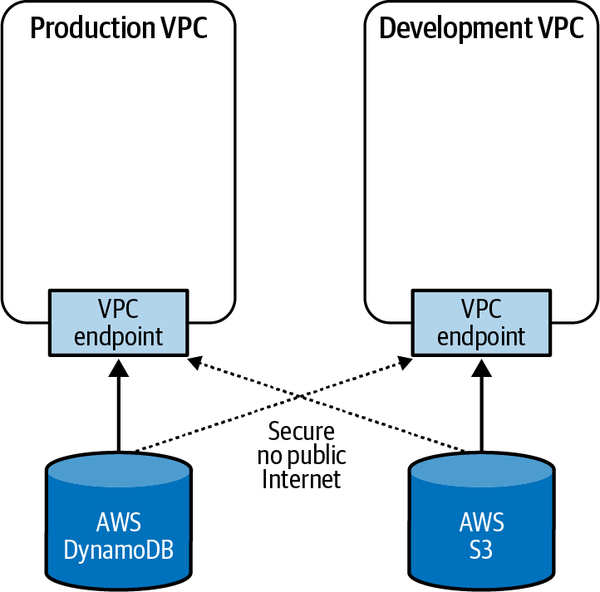
Once the VPC endpoint receives these packets, AWS assumes the responsibility of transferring the packets to the destination service as part of the SRM. This communication is guaranteed to be on the AWS network and hence can be considered to be secure from the application’s perspective. Thus, the services that need access to the managed AWS services can still continue to be inside private networks while maintaining complete connectivity to the managed AWS services.
The benefit of gateway VPC endpoints can be extended to a wider range of services, including user-provided services using interface VPC endpoints. In an interface VPC endpoint, instead of a gateway, an ENI is created inside your network for the service you wish to connect to. If you wish to send packets to a destination service that has an interface endpoint within your VPC, you can add a route to your route table to start directing packets to this interface endpoint. In the route table, the next hop for this route will be this newly added ENI while the destination will be the service you wish to communicate with. The traffic that is directed to this ENI is then transported to the destination service by AWS as part of the SRM. Since the ENI happens to be within the network that hosts your other backend services, the packets do not end up traversing over the public internet to reach their destination. Since an interface endpoint is an ENI that is created for your remote service, you get even more granular control by being able to add a security group to this endpoint for an added layer of protection. I will talk about this in detail in “Security Groups”.
In containerized developments, it may be a good idea to connect AWS Elastic Container Registry (ECR) to the VPC running your Kubernetes services using an interface VPC endpoint. This is especially useful if your pods run inside a private subnet with no public internet access.
Figure 5-16 shows an example of how a network load balancer (NLB) from the analytics domain is used to create a PrivateLink connection with a VPC by creating interface endpoints inside the marketing domain. In Figure 5-16, NLB from the Analytics domain is projected into the different subnets within the Marketing domain’s VPC as if it were a local ENI. From that point onward, your responsibility is to send data only to this local ENI; AWS assumes the responsibility of shipping all of this data from the endpoint to its desired destination within the Analytics VPC, relieving you of the pain of architecting a cross-network connection.
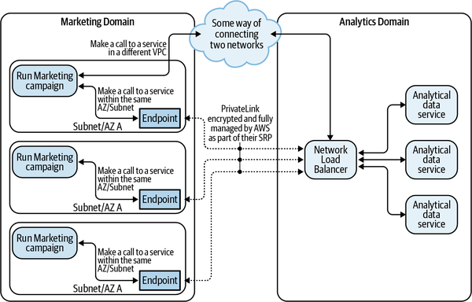
Once the endpoint is created within your VPC, these services can then be treated as full-fledged members of your network, thus taking a considerable amount of overhead off your microservices. Figure 5-17 illustrates the process of creating a VPC endpoint in the AWS Management Console.
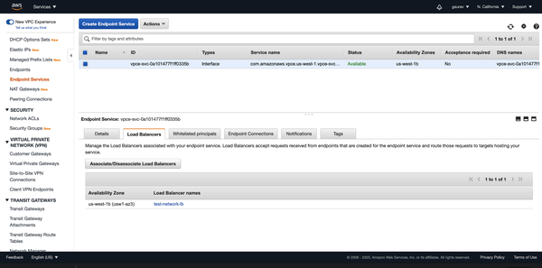
Under the hood, VPC endpoints are enabled by AWS PrivateLink. PrivateLink allows for the creation of secure tunnels between a provider and service endpoint without exposing your network packets to the public internet, giving you the illusion of having the service endpoint colocated in your VPC.
PrivateLink can also work with Direct Connect or VPN to link your on-premises service with the rest of your cloud infrastructure, allowing you to create an endpoint for any on-premises application. Chapter 9 discusses this option further.
Another common use case for PrivateLink is to connect to any third-party SaaS provider where you don’t have to worry about security in transit between your VPC and the SaaS provider’s network.
VPC endpoint services can also span across AWS accounts, allowing you the ability to create multiple accounts per organization, based on the bounded context. These accounts can be controlled using service control policies (SCPs):
AWS supports transitive routing for VPC endpoints, unlike VPC peering. This is as long as your subnet network access control lists (NACLs) and route tables allow such a route.
Similar to the AWS Transit Gateway, the VPC endpoints allow us to create a microservice network without compromising on control and security. Unlike the AWS Transit Gateway, though, VPC endpoints allow us to create peer-to-peer connections and more granular control over who can talk to which microservice while maintaining complete control.
You can now start projecting endpoints. To do so, perform the following actions:
List all the consumer microservices.
List all the service providers.
List all the managed services that may need to be accessed by services inside a VPC.
Figure 5-18 illustrates an example of a DDD where the services are laid out and waiting to be connected.
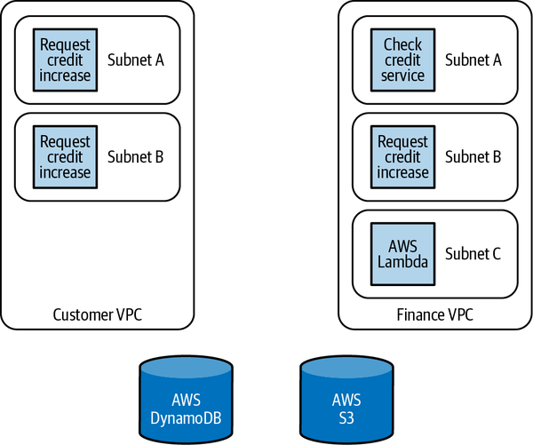
Once these services are listed, you can start the process of connecting them based on allowed communication patterns:
Create an NLB to sit on top of the service providers, which are backed by EKS, ECS, or Elastic Cloud Compute (EC2) instances. (AWS Lambdas work directly with VPC endpoints.)
Create a cross-account VPC endpoint within the VPC of a consumer microservice that links with the service provider’s NLB.
Create VPC interface endpoints for the AWS Lambda services, managed AWS services, or any of the services behind an NLB. You may add these endpoints in multiple subnets if you want to maintain high availability.
Create gateway endpoints for services that support them, such as AWS S3 and DynamoDB.
Update the services and the route tables in the consumer VPC to connect to these endpoints instead of connecting to the destination services.
Figure 5-19 highlights these steps.
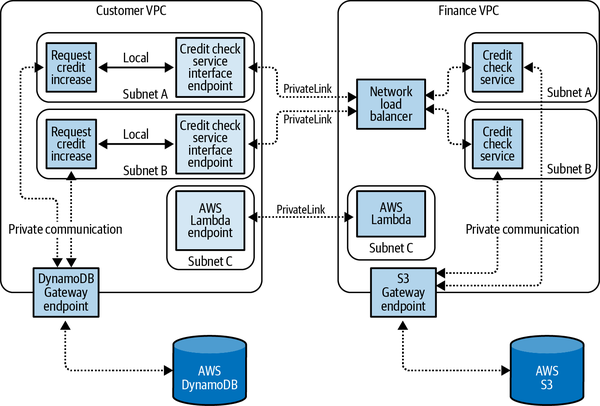
Once all of your service providers have an endpoint in the service consumer’s VPC, you can be assured that all communication that happens between services will be secure. The service consumers can isolate their network since it may never need to communicate with any external resource outside of its VPC perimeter, leading to a truly secured infrastructure.
Since interface endpoints connect single services across VPCs, the costs associated with them increase as the number of connecting services increases. The pricing structure is a little different in the case of VPC endpoints. For starters, you are charged per endpoint/per subnet. So an endpoint for the same service in multiple subnets will incur multiple fees. You have to pay a fixed cost for each of these endpoints, resulting in possibly higher costs. Apart from the cost of creating an endpoint, you still have to pay per gigabyte for the data that is transferred through the VPC endpoint.
From a complexity perspective, this is probably the easiest to manage if you have fewer services. Since the end result may involve completely containing all services within a VPC, hardening the perimeter becomes easier as a result.
After isolating your microservices using VPCs and having a well-partitioned architecture, you can continue to enable controlled communication for legitimate use cases in the three ways I’ve discussed. Each of these approaches has its own merits and demerits, and which one works best ends up being a choice your organization has to make. Table 5-1 summarizes.
| VPC peering | AWS Transit Gateway | VPC endpoints/PrivateLink | |
|---|---|---|---|
| Network topology | You create a mesh network topology of your contexts where you connect multiple bounded contexts with one another. | You create a hub-and-spoke model of network topology in which you connect multiple bounded contexts with a central router. | You create a point-to-point network topology of microservices in which you granularly make services available across contexts instead of connecting contexts. |
| Cost | Peering connections do not require any additional cost. Data transferred across peering connections is charged. | You are charged for the number of connections you make to the Transit Gateway per hour and the amount of traffic that flows through the Transit Gateway. | You will be billed for each hour that your VPC endpoint remains provisioned in each AZ, irrespective of the state of its association with the service. |
| Independence of microservices | Since your IPs cannot have any overlap, significant coupling and overhead (in terms of invariants) are created that have to be satisfied while designing different networks for different contexts. | This is similar to VPC peering, lacking the ability to connect networks with overlapping CIDR blocks. Transit Gateway does bring in a cross-context invariant when it comes to network design. | Since individual services are exposed independently to their networks, the service provider and service consumer can have overlapping CIDR blocks. |
| Latency | There is no extra latency. | Transit Gateway is an additional hop for communication between VPCs, leading to a slight delay in moving packets around. | There is no extra latency. |
| Use case | This is best used when you have clear rules defined around which service contexts can talk to one another. | Transit Gateway is best used when you have a lot of transitive routing of packets. | This is best used when you have a lot of provider-consumer types of relationships among services. |
| Summary | There is no added cost and it is easy to implement. However, due to its inability to support transitive connections, VPC peering can end up creating a lot of complexity if you have many cross-context calls. | Transit Gateway is not free; however, if your application has a star-like communication pattern, transitive connections make the pattern simpler to implement, but granular security controls may be harder to implement. | Since external services show up as local network interfaces, integration and cross-service communication are simple. However, projecting all endpoints may not be simple in all architectures. |
Firewalls are a concept that predate modern cloud computing. They have existed for almost as long as computer networks have. Their use today is still very relevant, mainly because their task is so simple. All a firewall does is decide whether a request is allowed to proceed or is denied.
Roughly speaking, firewalls can be divided into two broad types:
This notion of a firewall can be extended further on the cloud. For starters, although individual operating systems have firewalls, we want to implement a firewall-like effect at the cloud level.
Amazon gives us two main tools to achieve this effect at the network level. One way is to implement host-based firewalls such as iptables on individual machines and continue using the technology. But a better approach is to use the firewalls at the cloud level instead of inside the instance:
Security groups are similar to firewalls in traditional networking. They are a set of simple rules that can be applied to a network interface. These rules are evaluated against each incoming packet. The rules are evaluated all at once. If any of the rules in the security group apply to the incoming packet, the security group allows the packet to proceed to our instance. Security groups cannot explicitly deny a packet from going further.
Think of security groups as a flexible entity that works at an ENI level. So, if you are to remove the ENI from a cloud instance and apply it to another one, the security groups attached to this ENI get applied to the new cloud instance. Security groups can be added on top of any service that has an ENI. So any AWS Lambdas, load balancers, AWS relational database service (RDS) instances, EC2 instances, or even VPC endpoints can have security groups associated with them.
The simplest forms of security groups involve an incoming or outgoing IP source, a port, and the protocol (TCP or UDP). So we decide for any Lambdas, RDS clusters, EC2 instances, and EKS clusters which IP ranges are allowed to communicate with the service behind this ENI and on which port. Unless a rule exists that allows this communication, by default the security groups don’t allow any request (incoming or outgoing) that does not have a rule for it. Figure 5-20 shows a sample security group as created through the AWS Management Console.
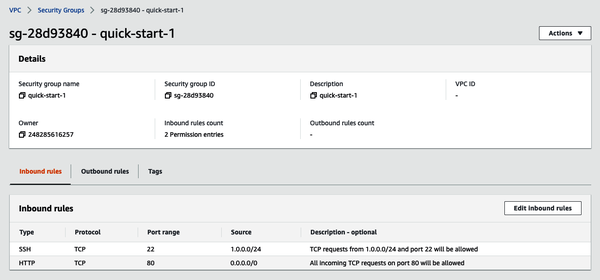
For container-based microservices on EKS, AWS now has the capacity to add security groups to some pods, similar to EC2 instances. It is also possible to use custom networking for EKS if the pods on a particular node would like to use security groups that are different from the node that they are running on.
Security groups also allow other security groups to be a part of the rules instead of using an IP address. It is possible to identify requests based on which security groups their hosts belong to and granularly allow access to resources.
This means you don’t have to refer to the IP address of any of your known microservices when trying to allow or deny access to the instance. You can refer to other services in the context of a security group by referring to it by its security group. Since security groups work by only allowing traffic, they fit in well with microservices.
You can design your security groups by following these steps:
Create a security group for each of your microservices and come up with an easy-to-use name.
Attach these security groups to your containers/instances/Lambdas that run these services.
Identify all the other services that need to communicate with these services at a network level and the port at which they need to interact with this service.
Attach a policy within the security group that allows the security group from services identified in Step 3 to communicate with this service on the port that is predetermined.
Figure 5-21 shows how you can create one security group, apply it to an ENI, and use that security group as a source item for the rules present in a different security group instead of providing an IP as the source.
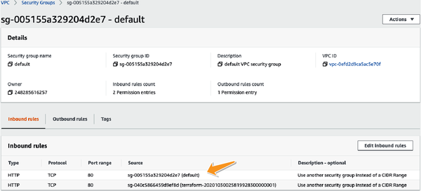
This way, security group rules can be created without the need to remember hostnames, IP addresses, or any other infrastructure-related information associated with services.
VPCs connected to an AWS Transit Gateway cannot reference security groups in other spokes connected to the same AWS Transit Gateway.
Here are some of the properties of security groups:
In the case of Kubernetes, it is considered to be best practice to set up two different security groups for your infrastructure. Your pods being in the data plane can benefit from one set of rules while your control plane can benefit from another. But it’s important to make sure that the security groups involved in communication between the control and the data plane are compatible with one another.
NACLs at first glance resemble security groups. For starters, their syntax is very similar to security groups. You can explicitly allow traffic to flow in and out of a subnet using an NACL. And NACLs are another tool that provide us with the ability to firewall malicious traffic. However, the similarity ends there.
As mentioned, NACLs sit at the gateway of the subnet. NACLs inspect the traffic at the gateway and decide whether the traffic can flow through it (in either direction). Unlike security groups, NACLs can have either an ALLOW or a DENY option to them, making them better to use when it comes to enforcing invariants at the subnet level.
As a result, you can think of security groups as a way of enforcing individual security rules, enforcing least privilege, and so on, while NACLs are great at enforcing organizational invariants at an infrastructure level. Figure 5-22 shows a sample NACL being created through the AWS Management Console.
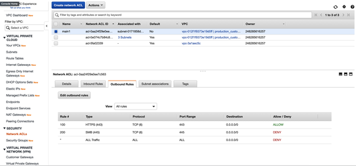
As seen in Figure 5-22, NACLs are evaluated in the ascending order of the value in the column “Rule #.” Each packet is matched against a rule in the ascending order, and once a match is established, the evaluation exits. Thus, the order of rules is important since a rule with a higher “Rule #” may never get evaluated if a wider rule with a smaller number matches the packet. Figure 5-23 shows how NACLs and security groups are evaluated during service-service network communication.
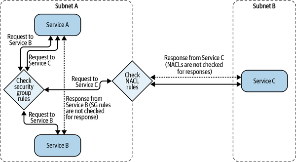
As shown in Figure 5-23, unlike security groups, NACLs are stateless. So an outgoing request does not automatically allow an incoming response, and hence NACLs have to be enabled or disabled in both directions for such a request-response pattern of communication to work. NACLs only act at a security gateway. So traffic that flows between hosts in the same subnet may not get evaluated against a NACL, and this is important to note. For requests within the same subnet, security groups are the best way of enforcing firewall rules.
Due to the added complexity of adding inbound and outbound rules while using NACLs, security groups are more commonly used as firewall measures. In my personal experience, I have only used NACLs as supplemental protection measures but rarely as the primary ways of providing security.
Every default VPC comes with a default NACL that allows all inbound and outbound traffic. In general, NACLs are great at defining subnet-level rules of communication and translating broad business logic into network rules. Each subnet can have only one NACL associated with it. Assigning a new NACL will disassociate the existing one and replace it with the new one.
At the surface, security groups and NACLs seem to provide controls for very similar problems. However, there are some subtle differences, which are highlighted in Table 5-2.
| Security groups | NACLs |
|---|---|
| Act at an ENI (and consequently an instance) level | Act at a subnet level |
| Stateful (requests automatically allow responses) | Stateless (requests and responses should be independently specified and allowed) |
| Only allows requests | Allows or denies requests |
| All rules evaluated to find an allow statement | Rules evaluated in an order as prescribed by the “Rule #” column |
| Should be used as a firewall replacement in the cloud | Should be used to make subnet-level rules such as “I never want traffic from this subnet to talk to traffic of this other subnet.” |
Figure 5-24 shows how requests between two instances that are in different subnets are evaluated against a waterfall of security rules.
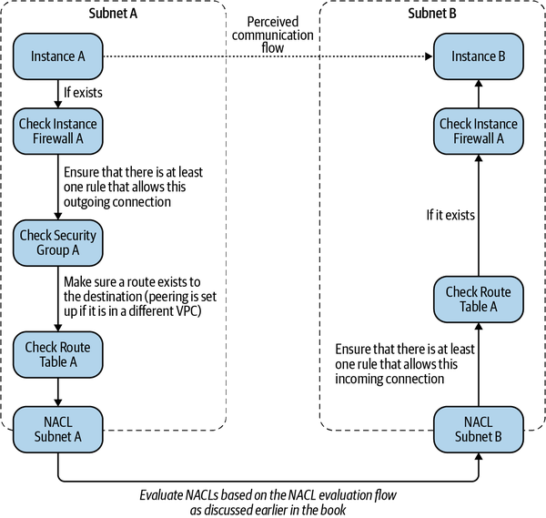
The stateliness of security groups is perhaps the most important criteria that network engineers need to be aware of when using NACLs.
Figure 5-25 illustrates how request evaluation differs between NACLs and security groups due to the stateful nature of security groups and the stateless nature of NACLs.
Considering additional complexity associated with NACLs, not to mention the lack of flexibility at an individual service level, individual rules related to individual services are simple to implement using security groups, while security invariants can be best codified and enforced using NACLs.
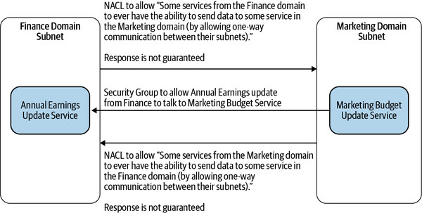
Until now, I’ve assumed you set up your container network in a way that follows the same security best practices as your instances and your physical hardware. Although this is generally true in most situations, there are some best practices that can be followed to make your Kubernetes setup more secure from a network perspective.
Kubernetes pods are abstractions that may be running on actual virtual machines (VMs). The host machines may have roles and permissions that may be different from those intended for your pods. It is important that your pods do not mistake who they are with the roles and identities that are attached to the nodes that they run on. If you have assigned roles to pods using some tool, such as kube2iAM or Kiam, you have to make sure that calls from the pods do not reach the instance metadata service (IMDS) that AWS makes available on each EC2 instance.
I might be a little opinionated here, but I can’t think of too many instances where a Kubernetes pod needs to have direct internet accessibility. Almost all of your access should be streamlined via AWS API Gateway or some sort of an application load balancer. Hence, your Kubernetes data plane should almost always run in a private subnet away from where any attacker can gain access and compromise your pods.
API server endpoints are public by default, and API server access is secured via identity and access management (IAM) and Kubernetes role-based access control (RBAC). You should enable private access to your production cluster endpoints so that all communication between your nodes and the API server stays within your VPC.
Generally speaking, it is not too common for pods to connect to the internet. Hence, a default strategy should be to block internet access for pods unless it is absolutely necessary. This can be achieved by running pods inside subnets that do not have NAT routers.
This is a new feature that AWS has added in some EC2 Nitro instances. Nearly all container-based applications use only clear text HTTP for traffic and let the load balancers handle transport layer security (TLS). This is an acceptable trade-off. After all, if your pods run in a private subnet in your own VPC, it is generally acceptable to assume your network connections between pods are secure. But with the rise of zero trust networking and the downfall of perimeters, there has been a growing demand for secure networking, especially in the defense and financial sectors.
There are two ways of implementing encryption at the pod networking level. One is to use marketplace solutions such as Cilium, which offers secure networking. However, this comes at a network speed cost since this process is not fast. Another way is to use certain EC2 Nitro instances, which allow AES-encrypted networking when communicating between other instances within the same VPC.
For Lambdas, most of the security aspect of microservices is handed over to AWS as part of the SRM. If you run a Lambda function without configuring it to use your VPC, the function is authorized to get information from the public internet. Since this function lives completely outside your network, it cannot then get any information inside of your VPC and thus cannot interact with any of your VPC-based private resources. Such a Lambda function is useful for performing utility tasks such as error response handling or other tasks that do not require any access to your internal resources. This Lambda function also ensures that there is a clean separation of your resources from the publicly accessible part of your application at a network level.
However, if you decide to use Lambdas for setting up your internal microservices, chances are, for quite a few of your applications, you will need to have access to resources that live on your VPC. In order to provide security, this access needs to happen on the private AWS network so that the communication is not exposed to external threats. To achieve this goal, AWS allows you to configure your Lambdas to run with any of your VPCs. For each function, Lambda will create an ENI for any combination of security groups and VPC subnets in your function’s VPC configuration. The network interface creation happens when your Lambda function is created or its VPC settings are updated. Invoking a function in the execution environment simply creates a network tunnel and uses the network interface that is created for the execution of this Lambda.
Multiple functions using the same subnets share network interfaces. AWS then performs a cross-account ENI (X-ENI) attachment of this ENI to your VPC, allowing this Lambda to access resources within your private network. Since your function scaling is independent of the number of network interfaces, ENIs can scale to support a large number of concurrent function executions.
Security beyond your network is handled by AWS as part of the SRP. All invocations for functions will be made by the Lambda service API, and no one will have access to the actual execution environment, keeping this Lambda safe in case of a breach of network either on your account or any other tenant. Figure 5-26 illustrates how the ENIs are projected inside VPCs during Lambda execution.
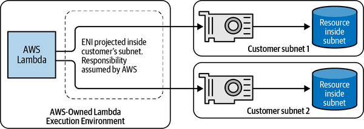
I have described different ways in which you can utilize our sample architecture. Although perimeter security measures have worked well for monoliths and partitioned systems based on an underlying technology, microservices need more network isolation at the service level due to their dispersal across the network. Service-level isolation can be achieved on AWS by properly designing your AWS account and VPC structure. However, this can be difficult if your logic flow requires a lot of cross-service asynchronous communication. I have described three ways of achieving cross-VPC flow through the use of VPC peering, VPC Transit Gateway, and VPC endpoints. I have also talked about the use of various firewall measures to protect your services from unauthorized access. In the next chapter, I will talk about how you can maintain security around services (or resources) that actually need to be accessed by public users who attempt to connect to these services using the public internet.